CI/CD — GitHub 인프라 파이프라인
이론적 배경
로컬 terraform apply는 개발자 PC에서 state를 만지지만, 팀·자동화 환경에서는 state를 S3 backend에 두고 DynamoDB로 잠급니다. 파이프라인의 CodeBuild는 이 S3 state를 읽어 plan→apply합니다. plan과 apply 사이에 수동 승인을 둬서 "계획 확인 없이 인프라가 바뀌는" 사고를 막습니다.
학습 목표
- CodeConnections로 GitHub을 CodePipeline 소스로 연결하는 법을 안다
- Terraform을 CI/CD에 올릴 때 필요한 S3 backend·DynamoDB lock을 설명할 수 있다
- buildspec.yml의 phases 구조를 읽을 수 있다
- plan→승인→apply 게이트가 왜 필요한지 설명할 수 있다
핵심 내용
- S3 backend + DynamoDB — CI 환경에서 필수인 원격 state·잠금
- CodeConnections — GitHub을 파이프라인 소스로 연결 (push = 트리거, OAuth 승인 1회 수동)
- CodeBuild — terraform 설치 → init → validate → plan → apply 실행
- CodePipeline — 단계 오케스트레이션 + artifact 전달 + 수동 승인 게이트
- webhook — CodeConnections가 push 감지 (EventBridge 불필요)
만드는 리소스 (15개)
저장소 계층 (02-state.tf): tfstate 버킷(+버저닝·암호화·공개차단) · DynamoDB lock · artifact 버킷 — 7개
파이프라인 (main.tf):
| 리소스 | 역할 |
|---|---|
aws_codestarconnections_connection.github | GitHub 연결 — 소스·트리거 역할 (콘솔 승인 1회 필요) |
aws_iam_role.codebuild + admin | 빌드 실행 역할 (11_gitops_app도 공용) |
aws_codebuild_project.plan/apply | terraform plan / apply 실행기 |
aws_iam_role.pipeline + 정책 | 파이프라인 실행 역할 (11_gitops_app도 공용) |
aws_codepipeline.tf | Source→Plan→Approve→Apply 4단계 |
실행
terraform init
terraform apply # 저장소 계층 + 파이프라인 한 번에 생성
terraform output backend_snippet # 03_real backend 설정수동 1단계 — GitHub 연결 승인
connection은 apply 직후 PENDING 상태입니다 — OAuth 악수는 자동화가 불가합니다.
- 콘솔 → Developer Tools → Connections (또는 CodePipeline → 설정 → 연결)
<project>-github선택 → Update pending connection → GitHub 앱 설치·승인- 상태가
AVAILABLE이 되면 완료 — 이 이후 push부터 파이프라인이 자동 실행
사용 흐름
# 1) 03_real을 S3 backend로 전환
cd 03_real && terraform init -migrate-state
# 2) 평소처럼 GitHub에 push — CodeCommit·별도 리모트 없음
git push origin main # main 브랜치 감시 → 파이프라인 자동 실행- CodePipeline 콘솔에서 Source→Plan→Approve→Apply 확인
- Approve에서 멈추는 게 정상 — Plan 로그를 보고 승인
핵심 포인트
- 이 단계의 state는 로컬 —
terraform.tfstate파일이 버킷·파이프라인 전부를 추적합니다. - 공용 IAM 역할 2개는 이 단계 소유 —
outputs.tf로 11_gitops_app에 전달됩니다. - 소스가 GitHub 리포 전체라
TF_DIR(기본03_real)·buildspec경로는 리포 안 위치와 일치해야 합니다. - 앱 배포 파이프라인(dev 브랜치 기반)은
11_gitops_app에서 다룹니다.
실습 순서 — GitHub 리포 1개로 끝
파이프라인 소스는 이 GitHub 리포입니다 — git push origin main이 곧 트리거.
main = 인프라(운영), dev = 앱(개발) — 브랜치가 두 파이프라인의 경계입니다.
준비
03_realapply 완료 (EKS 포함) + 로컬에 terraform·git·aws cli·kubectl- git 명령은 전부 리포 루트에서 실행
Step 1 — 저장소 계층
cd 10_gitops_infra
terraform init && terraform apply
terraform output backend_snippet # 다음 단계에서 붙여넣을 블록Step 2 — 인프라 파이프라인
# 1) 03_real/versions.tf의 terraform {} 블록에 backend_snippet 붙여넣기
cd 03_real && terraform init -migrate-state # state를 S3로 이동
# 2) 파이프라인 생성 — GitHub connection이 함께 만들어짐
cd 10_gitops_infra && terraform init && terraform apply
# 3) ★ 수동 1회: 콘솔 → Developer Tools → Connections →
# '<project>-github' → "Update pending connection" → GitHub 앱 설치·승인 → AVAILABLE
# 4) 평소처럼 GitHub에 push — 이게 트리거
git push origin main # 첫 실행은 콘솔 '변경 릴리스' 또는 새 pushCodePipeline 콘솔에서 Source→Plan→Approve→Apply를 관찰 — Approve에서 멈추면 Plan 로그를 보고 승인.
검증: cd 03_real && terraform plan → No changes면 파이프라인이 S3 state를 갱신한 것.
# 이후 실습: 03_real 코드를 조금 바꾸고 → git push origin main → plan diff 확인 → 승인Step 3 — 앱 파이프라인 → 11_gitops_app으로 분리됨
앱 배포는 같은 리포의 dev 브랜치를 트리거로 쓰는 별도 단계 11_gitops_app에서 진행합니다 —
"리포는 하나, 환경은 브랜치로"라는 GitOps 패턴입니다.
정리 — destroy는 역순, 로컬에서
cd 11_gitops_app && terraform destroy # 사용했다면
cd 10_gitops_infra && terraform destroy # 2
cd 10_gitops_infra && terraform destroy # 1 — S3 버킷 비운 뒤 가능remote_state로 10_gitops_infra를 참조하는 단계가 남아있으면 10_gitops_infra를 지울 수 없습니다.
이 파이프라인의 범위
이 단계가 만드는 것은 인프라 파이프라인입니다 — .tf 코드 변경을 자동 배포합니다.
애플리케이션 배포는 별도 파이프라인입니다:
[인프라 파이프라인] ← 이 디렉터리가 만드는 것 (main 브랜치 소스)
.tf push → plan → 승인 → apply (VPC·EKS·RDS 같은 뼈대)
[앱 파이프라인] ← 11_gitops_app이 만드는 것 (dev 브랜치 소스)
앱 코드 push → docker build → ECR push → EKS 배포| 앱 파이프라인 구성 요소 | AWS 서비스 |
|---|---|
| 이미지 빌드 → ECR push | CodeBuild + ECR |
| EKS 배포 | CodeBuild에서 kubectl apply (또는 helm) |
| EC2 배포 | CodeDeploy (blue/green) |
| 실패 복귀 | kubectl rollout undo / CodeDeploy 자동 롤백 |
| 결과 알림 | SNS / EventBridge |
앱 배포 파이프라인 → 11_gitops_app
앱 배포(앱 소스 push → 이미지 빌드 → EKS 배포)는 dev 브랜치를 감시하는
11_gitops_app 단계로 분리했습니다 — 전제(aws-auth)와 절차는 그쪽 readme를 보세요.
실습 시나리오
장면: 수동 terraform apply로 관리하던 03_real 인프라를 GitOps로 전환 — push만으로 배포되는 구조를 직접 경험합니다.
준비 — 파이프라인 인프라 생성
cd 10_gitops_infra && terraform init && terraform apply
cd 10_gitops_infra && terraform init && terraform apply
terraform output backend_snippet # 03_real용 backend 설정 복사장면 1 — 로컬 state → S3 backend 전환
03_real/versions.tf의terraform {}블록에 backend_snippet 붙여넣기cd 03_real && terraform init -migrate-state→yesterraform state list— S3에서 읽히는지 확인, S3 콘솔에서 state 파일 확인
장면 2 — 첫 파이프라인 실행
git push origin main # 평소 push 그대로 — connection 승인 후엔 이게 트리거- CodePipeline 콘솔에서 Source → Plan 단계가 초록→파랑으로 진행
- Plan 완료 후 Approve에서 파이프라인이 멈춥니다 — 승인 없이는 인프라가 안 바뀜
장면 3 — 승인 게이트 경험
- Plan 단계 로그(CodeBuild)에서
Plan: 0 to add확인 - Approve의 승인 버튼 클릭 → Apply 실행 → 완료
장면 4 — 실제 변경 배포
03_real/main.tf에서 태그 하나 수정 (예: default_tags에Env = "cicd"추가)git commit -am "add env tag" && git push origin main- 파이프라인이 자동으로 다시 시작 → Plan 로그에 실제 diff 표시
- 로그를 읽고 승인 → apply 완료 → AWS에서 태그 확인
장면 5 — 실패 경험 (의도적 오류)
03_real에 문법 오류를 넣고 push (예: 중괄호 하나 삭제)- Plan 단계가 빨갛게 실패 — 파이프라인이 잘못된 코드를 차단
- 로그에서 에러 확인 → 고쳐서 push → 정상 통과 확인
선택 — 앱 파이프라인 (EKS 필요)
11_gitops_app 참조 — dev 브랜치에 push하면 이미지 빌드→EKS 배포.
파이프라인 테스트 — "CI/CD가 동작한다"는 뭘 확인하는가
apply가 된 것과 파이프라인이 동작하는 것은 다른 문제입니다. 아래 항목을 순서대로 검증합니다.
테스트 ① 트리거 — push가 파이프라인을 시작시키는가
echo "# test" >> ../../03_real/main.tf && git commit -am "ci test" && git push origin main- 확인: CodePipeline 콘솔에서 새 실행이 시작됨 — CodeBuild를 수동 실행하지 않았는데 시작됐다면 webhook 감지 성공
- 실패 시: connection이 PENDING → 콘솔에서 승인했는지 확인 /
github_repo변수가 실제 리포인지 확인
테스트 ② 각 단계가 순서대로 성공하는가
| 단계 | 확인할 것 | 성공 기준 |
|---|---|---|
| Source | SourceArtifact가 artifact 버킷에 저장됨 | 단계 초록 |
| Plan | CodeBuild 로그에 terraform plan 출력 | "Plan: N to add" 로그 |
| Approve | 실행이 멈춤 | 콘솔에 승인 버튼 대기 — 파이프라인이 알아서 안 넘어감 |
| Apply | terraform apply tfplan 로그 | plan 결과와 동일하게 적용 |
테스트 ③ 승인 게이트가 실제로 막는가
- Plan까지 성공 후 승인을 안 누름 → Apply가 실행되지 않는 걸 확인 (게이트 동작 증명)
- 승인 누르기 전 Plan 로그의 변경 내용 읽기 — 승인 = "이 plan을 승인"임을 체감
테스트 ④ 거부 — 잘못된 코드를 차단하는가
# 일부러 문법 오류 넣고 push
sed -i '' 's/cidr_block = /cidr_block == /' ../../03_real/main.tf
git commit -am "broken" && git push origin main
# → Plan 단계 빨간색 → 파이프라인 멈춤 → 되돌리고 재push- 이게 CI/CD의 핵심 가치: 로컬이었다면 에러가 "내 터미널"에서 끝나지만, 파이프라인에서는 "배포가 차단"됩니다.
테스트 ⑤ 상태 정합 — 파이프라인 apply 후 state가 갱신됐는가
cd 03_real && terraform plan # 로컬에서 확인
# → "No changes"가 나와야 함 — CodeBuild가 S3 state를 갱신했기 때문
# drift가 뜨면 state가 제대로 동기화 안 된 것테스트 ⑥ 앱 파이프라인 (11_gitops_app — 선택)
# app 코드 수정 → git push origin main:dev → Build(docker)·Deploy(kubectl) 로그 확인
kubectl get pods -l app=sample-app -w # 새 pod 롤링 확인
kubectl rollout status deployment/sample-app- 이미지 태그 = 커밋 해시 앞 8자리 —
kubectl describe deploy로 태그가 새 값인지 확인하면 "내 push가 배포됐다"가 증명됩니다.
정리
cd 11_gitops_app && terraform destroy # 사용했다면
cd ../10_gitops_infra && terraform destroy # tfstate 버킷은 prevent_destroy로 보호됨주의사항
- connection 승인(PENDING→AVAILABLE)을 안 하면 파이프라인이 Source에서 멈춥니다 — OAuth는 수동 1회
- CodeBuild는 빌드 시간만큼 과금 (소액), 수동 승인 대기는 무료
tfstate버킷은prevent_destroy— 삭제하려면 수동으로 라이프사이클 해제- CodeBuild 역할에 AdministratorAccess — 학습용 한정, 실무는 최소권한으로 교체
산출물 · 완료 기준
- git push 한 번으로 plan→승인→apply가 돌아가는 파이프라인
- 원격 state(S3+DynamoDB) 구조 이해
- [ ] 파이프라인 4단계(Source·Plan·Approve·Apply)의 역할을 설명할 수 있다
- [ ] 로컬 state와 S3 backend의 차이를 안다
- [ ] buildspec의 install/build/artifacts를 읽을 수 있다
프로젝트 구조
slides/
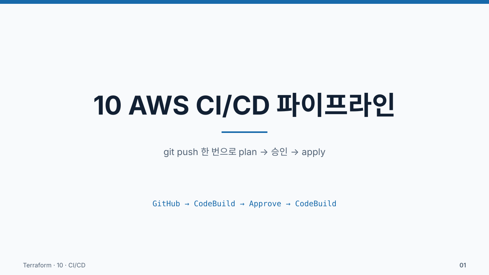
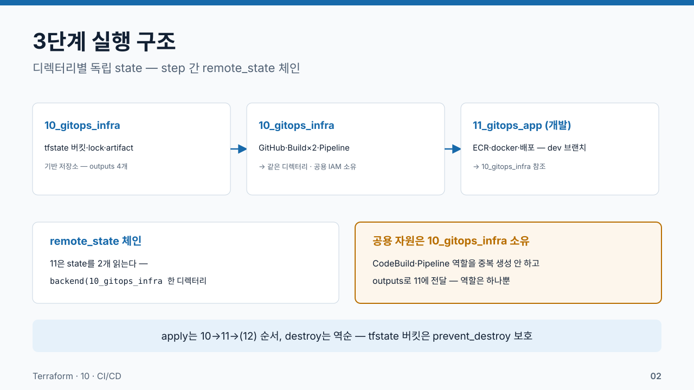
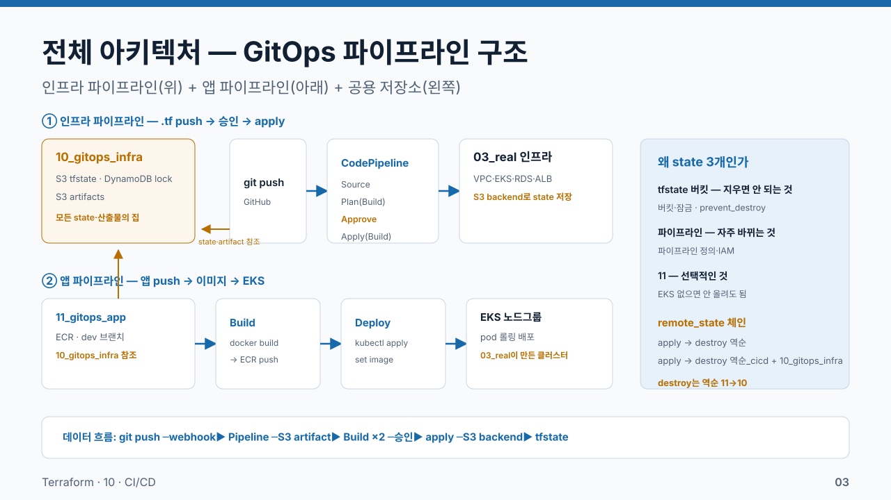
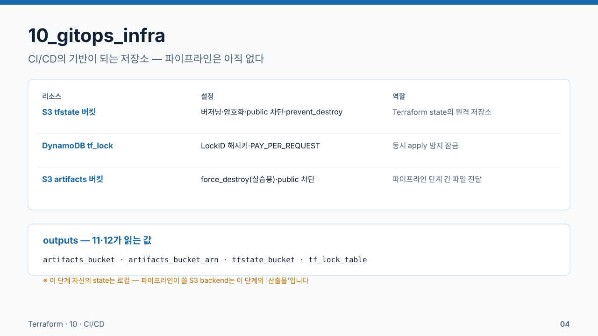
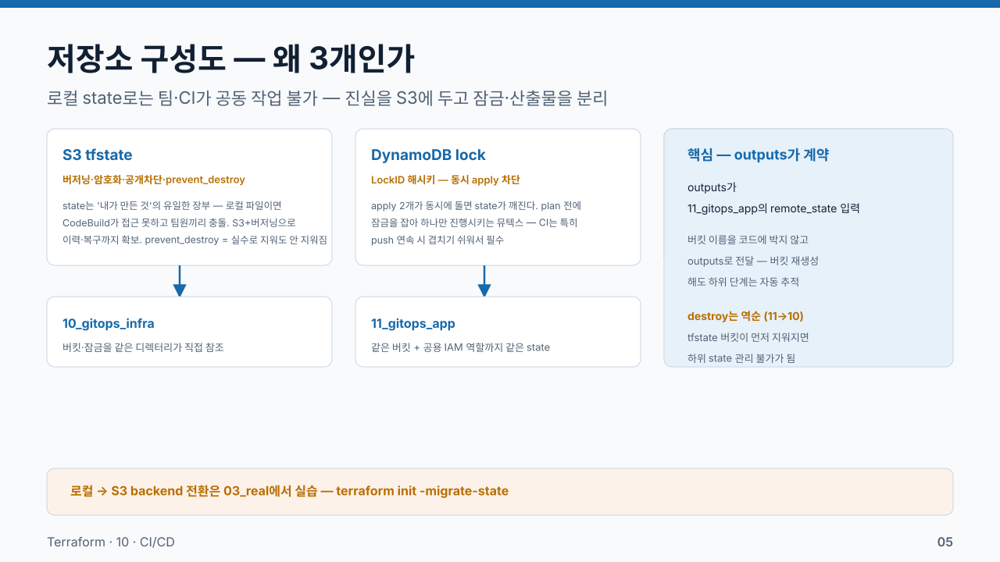

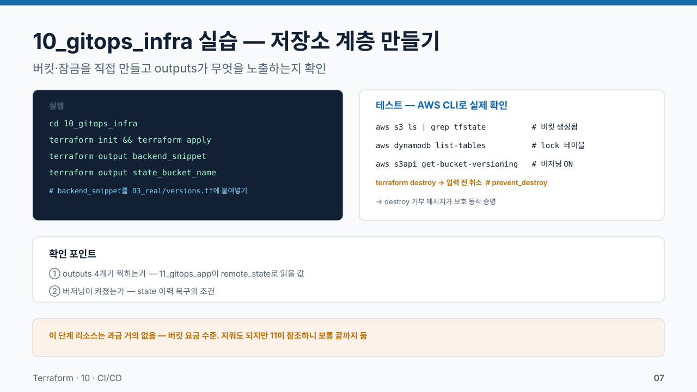
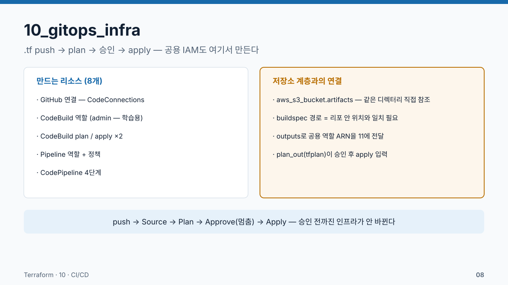
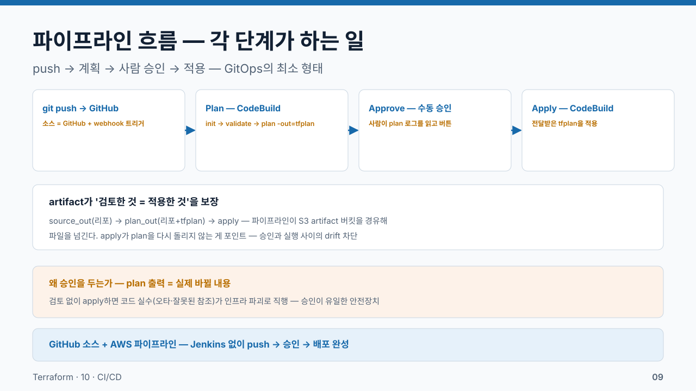
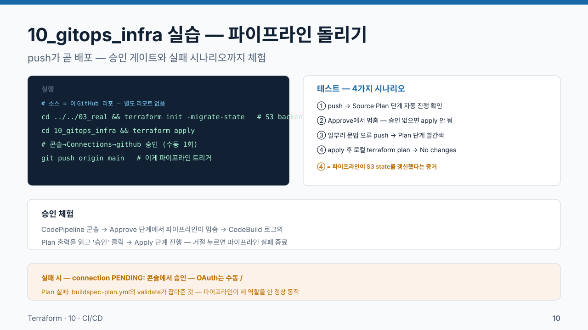
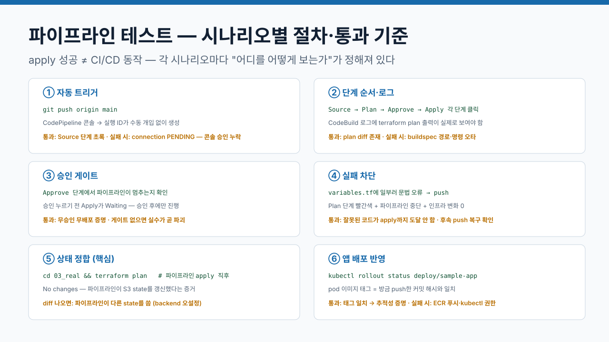
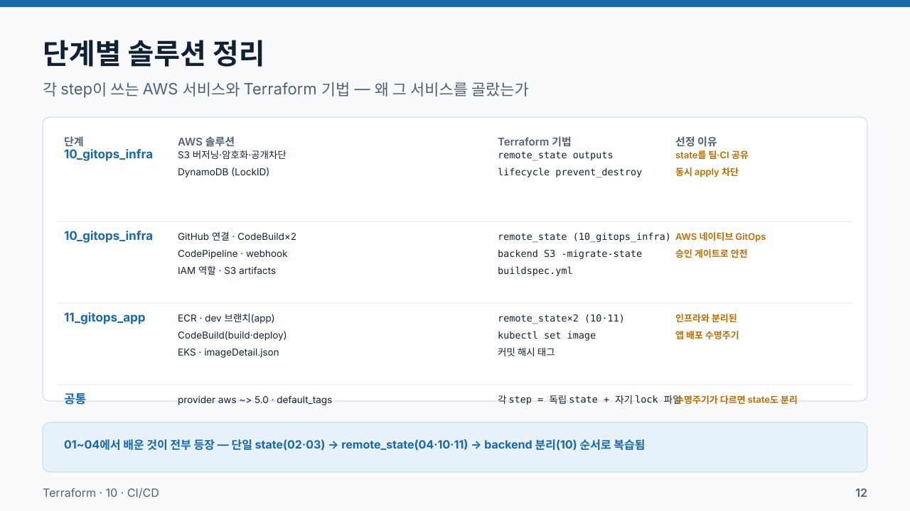
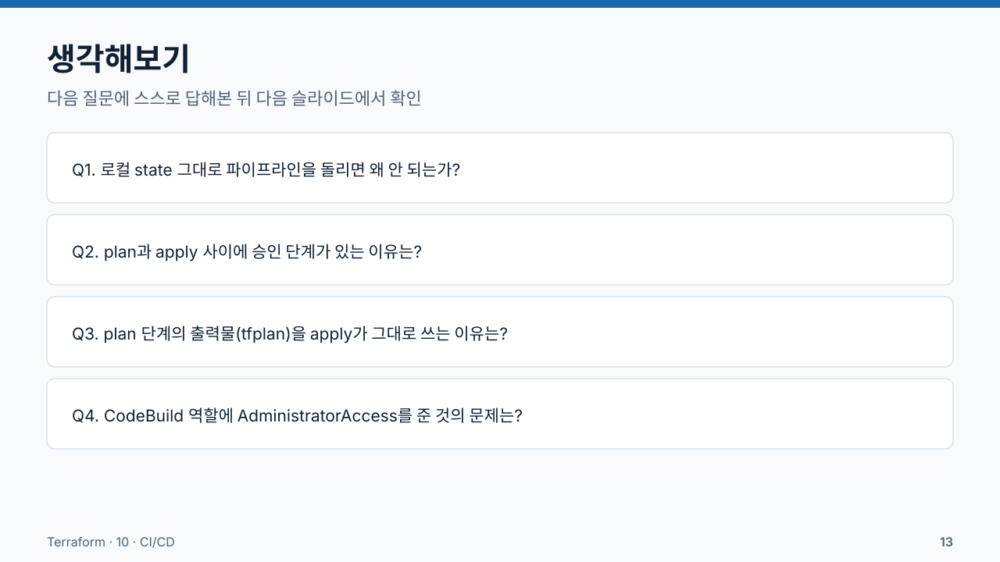
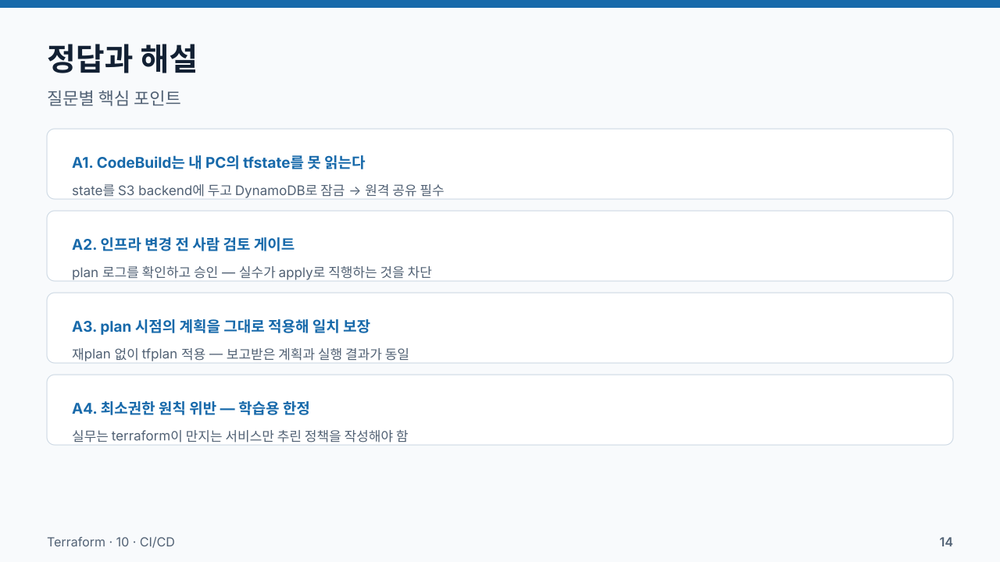
아래 명령은 터미널에서 프로젝트 루트(aws-tf/) 기준으로 실행합니다.
실행 방법
복사 버튼으로 명령을 가져간 뒤 터미널에 붙여넣기 (⌘V) 하세요.
terraform init추가 명령
# 1) 03_real을 S3 backend로 전환
cd 03_real && terraform init -migrate-state
# 2) 평소처럼 GitHub에 push — CodeCommit·별도 리모트 없음
git push origin main # main 브랜치 감시 → 파이프라인 자동 실행cd 10_gitops_infra
terraform init && terraform apply
terraform output backend_snippet # 다음 단계에서 붙여넣을 블록# 1) 03_real/versions.tf의 terraform {} 블록에 backend_snippet 붙여넣기
cd 03_real && terraform init -migrate-state # state를 S3로 이동
# 2) 파이프라인 생성 — GitHub connection이 함께 만들어짐
cd 10_gitops_infra && terraform init && terraform apply
# 3) ★ 수동 1회: 콘솔 → Developer Tools → Connections →
# '<project>-github' → "Update pending connection" → GitHub 앱 설치·승인 → AVAILABLE
# 4) 평소처럼 GitHub에 push — 이게 트리거
git push origin main # 첫 실행은 콘솔 '변경 릴리스' 또는 새 push# 이후 실습: 03_real 코드를 조금 바꾸고 → git push origin main → plan diff 확인 → 승인cd 11_gitops_app && terraform destroy # 사용했다면
cd 10_gitops_infra && terraform destroy # 2
cd 10_gitops_infra && terraform destroy # 1 — S3 버킷 비운 뒤 가능cd 10_gitops_infra && terraform init && terraform apply
cd 10_gitops_infra && terraform init && terraform apply
terraform output backend_snippet # 03_real용 backend 설정 복사git push origin main # 평소 push 그대로 — connection 승인 후엔 이게 트리거echo "# test" >> ../../03_real/main.tf && git commit -am "ci test" && git push origin main# 일부러 문법 오류 넣고 push
sed -i '' 's/cidr_block = /cidr_block == /' ../../03_real/main.tf
git commit -am "broken" && git push origin main
# → Plan 단계 빨간색 → 파이프라인 멈춤 → 되돌리고 재pushcd 03_real && terraform plan # 로컬에서 확인
# → "No changes"가 나와야 함 — CodeBuild가 S3 state를 갱신했기 때문
# drift가 뜨면 state가 제대로 동기화 안 된 것# app 코드 수정 → git push origin main:dev → Build(docker)·Deploy(kubectl) 로그 확인
kubectl get pods -l app=sample-app -w # 새 pod 롤링 확인
kubectl rollout status deployment/sample-appcd 11_gitops_app && terraform destroy # 사용했다면
cd ../10_gitops_infra && terraform destroy # tfstate 버킷은 prevent_destroy로 보호됨소스 구조
파일·디렉터리 역할
| 경로 | 역할 |
|---|---|
10_gitops_infra/ | 공용 저장소 — tfstate·lock·artifact 버킷 |
10_gitops_infra/ | 인프라 파이프라인 + 공용 CodeBuild/Pipeline 역할 |
11_gitops_app/ | 앱 파이프라인 — dev 브랜치 소스, 10·11 출력을 remote_state로 참조 |
buildspec-*.yml | CodeBuild 실행 명령 — phases/artifacts |
파일 맵 — .tf ↔ 선언 리소스
| 파일 | 리소스 / 데이터 소스 |
|---|---|
01-provider.tf | aws_caller_identity.current |
02-state.tf | aws_s3_bucket.tfstate |
03-outputs.tf | (선언 없음) |
main.tf | aws_codestarconnections_connection.github |
variables.tf | (선언 없음) |
※ 브라우저에서는 실행할 수 없습니다 — 명령을 복사해 터미널에 붙여넣으세요.
탭 전환
상단 내비게이션을 클릭하면 해당 패널이 표시됩니다. 주소창 해시(#tab-slides 등)로 특정 탭에 바로 이동할 수 있습니다.
SVG 뷰어
- 슬라이드 탭의 SVG 이미지를 클릭하면 팝업 뷰어로 확대 표시됩니다
- 뷰어에서
‹›버튼 또는←→키로 이동합니다 ESC·✕ 닫기· 어두운 배경 클릭으로 닫습니다
단축키
| 키 | 동작 |
|---|---|
← → | 뷰어에서 이전/다음 슬라이드 |
ESC | 뷰어 닫기 |
참고
- 이 페이지는 서버 없이 동작합니다 —
index.html을 브라우저로 바로 열면 됩니다 - 탭 내용과 뷰어의 소스 코드는 생성 시점의 스냅샷입니다 — 원본이 수정되면 페이지 재생성이 필요합니다